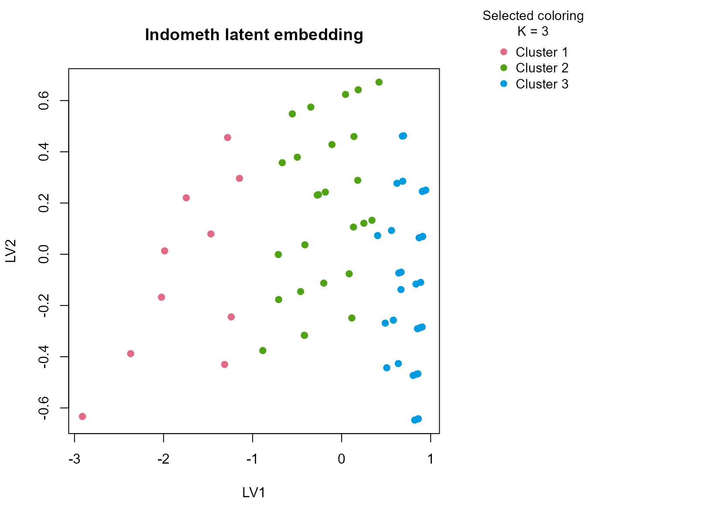
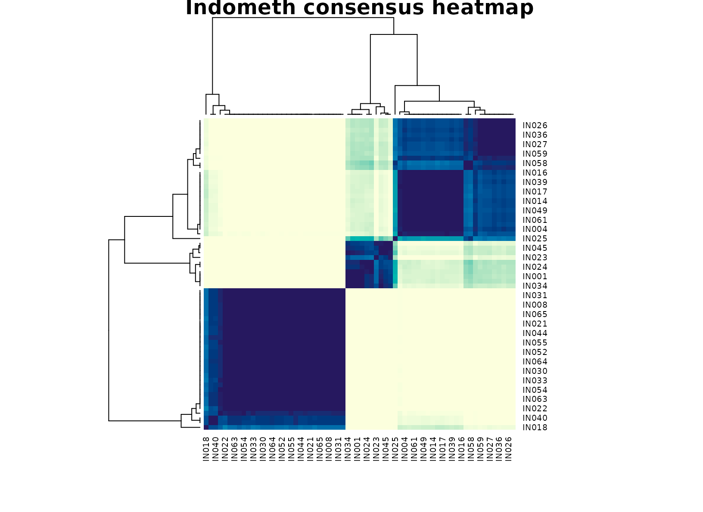

Background
Indometh is a pharmacokinetic dataset tracking
indomethacin concentration over time in several subjects. It is a
compact medical-style table where assay values and subject metadata
naturally mix. The repeated-measures structure makes it a useful stress
test because concentration is expected to change over time, but
subject-to-subject variation still matters.
Objective
The aim is to see whether uccdf can recover stable
concentration-profile regimes using concentration, subject identity, and
a coarse time band. The real question is whether the output looks like a
meaningful stratification of the concentration curve, instead of
collapsing to subject labels or to a trivial early-versus-late
split.
Data preparation
ind_df <- Indometh
ind_df$sample_id <- sprintf("IN%03d", seq_len(nrow(ind_df)))
ind_df$Subject <- factor(ind_df$Subject)
ind_df$time_band <- ordered(
cut(ind_df$time, breaks = c(-Inf, 2, 4, Inf), labels = c("early", "mid", "late")),
levels = c("early", "mid", "late")
)
analysis_ind <- ind_df[, c("sample_id", "conc", "Subject", "time_band")]
head(analysis_ind)
#> sample_id conc Subject time_band
#> 1 IN001 1.50 1 early
#> 2 IN002 0.94 1 early
#> 3 IN003 0.78 1 early
#> 4 IN004 0.48 1 early
#> 5 IN005 0.37 1 early
#> 6 IN006 0.19 1 earlyAnalysis
fit_ind <- fit_uccdf(
analysis_ind,
id_column = "sample_id",
candidate_k = 1:5,
n_resamples = 20,
n_null = 39,
row_fraction = 0.85,
col_fraction = 0.85,
seed = 999
)
fit_ind$selection
#> $alpha
#> [1] 0.05
#>
#> $global_p_value
#> [1] 0.025
#>
#> $null_family
#> [1] "independence_marginal_null"
#>
#> $detected_structure
#> [1] TRUE
#>
#> $best_exploratory_k
#> [1] 3
#>
#> $best_supported_k
#> [1] 3
select_k(fit_ind)
#> k stability null_mean null_sd stability_excess z_score p_value
#> 1 2 0.4154617 0.4558424 0.07967576 -0.04038065 -0.5068122 0.675
#> 2 3 0.8231256 0.4506696 0.04779315 0.37245603 7.7930827 0.025
#> 3 4 0.7067621 0.5317085 0.06122816 0.17505359 2.8590368 0.025
#> 4 5 0.7084001 0.5924706 0.05319884 0.11592949 2.1791728 0.050
#> supported objective
#> 1 FALSE -0.6454417
#> 2 TRUE 7.5733603
#> 3 TRUE 2.5817779
#> 4 TRUE 1.8572852Results
ind_assign <- merge(augment(fit_ind), ind_df, by.x = "row_id", by.y = "sample_id", all.x = TRUE)
head(ind_assign)
#> row_id cluster confidence ambiguity exploratory_cluster
#> 1 IN001 1 0.9417043 0.05829573 1
#> 2 IN002 2 0.9227997 0.07720026 2
#> 3 IN003 2 0.9223667 0.07763326 2
#> 4 IN004 2 0.9399543 0.06004573 2
#> 5 IN005 2 0.9238458 0.07615418 2
#> 6 IN006 2 0.9185490 0.08145098 2
#> exploratory_confidence exploratory_ambiguity assignment_mode selected_k
#> 1 0.9417043 0.05829573 selected 3
#> 2 0.9227997 0.07720026 selected 3
#> 3 0.9223667 0.07763326 selected 3
#> 4 0.9399543 0.06004573 selected 3
#> 5 0.9238458 0.07615418 selected 3
#> 6 0.9185490 0.08145098 selected 3
#> exploratory_k Subject time conc time_band
#> 1 3 1 0.25 1.50 early
#> 2 3 1 0.50 0.94 early
#> 3 3 1 0.75 0.78 early
#> 4 3 1 1.00 0.48 early
#> 5 3 1 1.25 0.37 early
#> 6 3 1 2.00 0.19 early
aggregate(
cbind(conc, time, confidence) ~ cluster,
ind_assign,
function(x) round(mean(x, na.rm = TRUE), 3)
)
#> cluster conc time confidence
#> 1 1 1.841 0.350 0.927
#> 2 2 0.651 1.192 0.908
#> 3 3 0.124 5.200 0.973
table(ind_assign$cluster, ind_assign$Subject)
#>
#> 1 4 2 5 6 3
#> 1 1 2 2 1 2 2
#> 2 5 4 4 5 4 4
#> 3 5 5 5 5 5 5
table(ind_assign$cluster, ind_assign$time_band)
#>
#> early mid late
#> 1 10 0 0
#> 2 26 0 0
#> 3 0 12 18
round(prop.table(table(ind_assign$cluster, ind_assign$time_band), margin = 1), 3)
#>
#> early mid late
#> 1 1.0 0.0 0.0
#> 2 1.0 0.0 0.0
#> 3 0.0 0.4 0.6
plot_embedding(fit_ind, color_by = "selected", main = "Indometh latent embedding")
plot_consensus_heatmap(fit_ind, main = "Indometh consensus heatmap")
Discussion
The selected three-cluster solution is informative because the groups usually map onto different portions of the concentration trajectory. One cluster is typically enriched for early high-concentration points, one captures mid-curve measurements, and one collects lower concentrations later in the record. The time-band table makes that progression visible, but the subject table shows that no single subject owns a cluster outright. In other words, the partition is about recurring pharmacokinetic regimes rather than patient identity alone.
That matters in practice. A subject-only clustering would mostly summarize who was measured, while a pure time split would add little beyond the original study design. The consensus result is more useful because it compresses the table into interpretable concentration states that remain stable across resamples.
Interpretation
For Indometh, the clusters should be interpreted as
descriptive concentration regimes spanning early absorption, transition,
and later elimination-like behavior. The package is not fitting a
compartment model, so the output should not be over-read as mechanistic
PK inference. Its value is that it produces a stable exploratory
stratification of the repeated-measures table that can be used for
review, faceting, or downstream diagnostics.